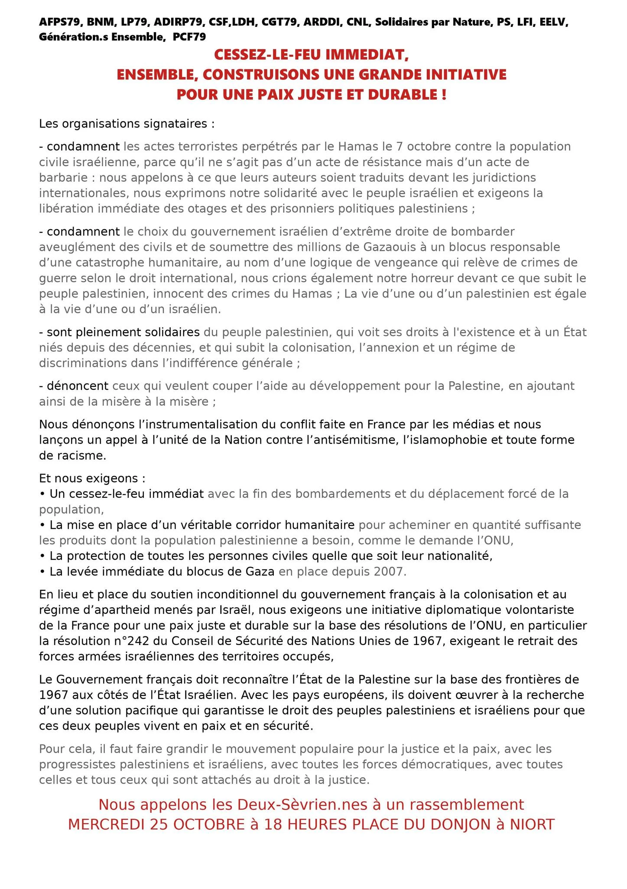

Publication d’archives
ENSEMBLE POUR LA PAIX ET LA JUSTICE,
Date indiquée par Facebook · 24 octobre 2023
Texte conservé avec la publication
ENSEMBLE POUR LA PAIX ET LA JUSTICE,
Mobilisons-nous camarades !
Ci-joint l'appel commun, réalisé avec d'autres organisations, syndicales, associatives et politiques, à un rassemblement pour un cessez le feu et une paix juste et durable au Proche Orient.
Ce rassemblement aura lieu le MERCREDI 25 OCTOBRE 2023 à 18h Place du Donjon à Niort
Il a été autorisé par la préfecture sous condition qu'il n'y ait ni propos ni affichages haineux ou antisémites.

Sources
Archive rouge · export Facebook · AR-0002-FB-01556
À lire aussi · À Niort, nous avons demandé un cessez-le-feu le 25 octobre